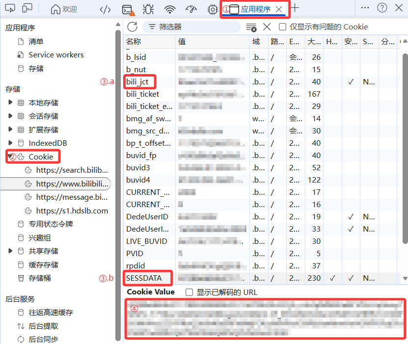

准备工作：获取身份凭证
在使用 弹幕发射器 之前，你需要获取 Bilibili 账号的身份凭证（Cookie）。程序需要这些凭证来代表你向 B 站服务器发送请求。
安全警告
SESSDATA 和 bili_jct 相当于你的临时账号密码。请勿将这些信息泄露给他人。本项目代码完全开源，且所有凭证均通过系统密钥环（Keyring）加密后存储在本地，不会上传至任何第三方服务器。
1. 登录 Bilibili
在浏览器（推荐使用 Chrome 或 Edge）中登录你的 B 站账号。
2. 打开开发者工具
按下 F12 键（或在页面右键点击“检查”），打开开发者工具面板。
3. 寻找 Cookie 字段
- 切换到 Application (应用程序) 选项卡。
- 在左侧菜单中找到 存储/Storage -> Cookie，并点击
https://www.bilibili.com。 - 在右侧的列表中搜索以下两个键值：
| 键名 | 说明 |
|---|---|
SESSDATA |
核心登录凭证 |
bili_jct |
CSRF 校验令牌 |
4. 填入程序
复制对应的值，回到 弹幕发射器 的“全局设置”页面，分别填入对应的输入框。
